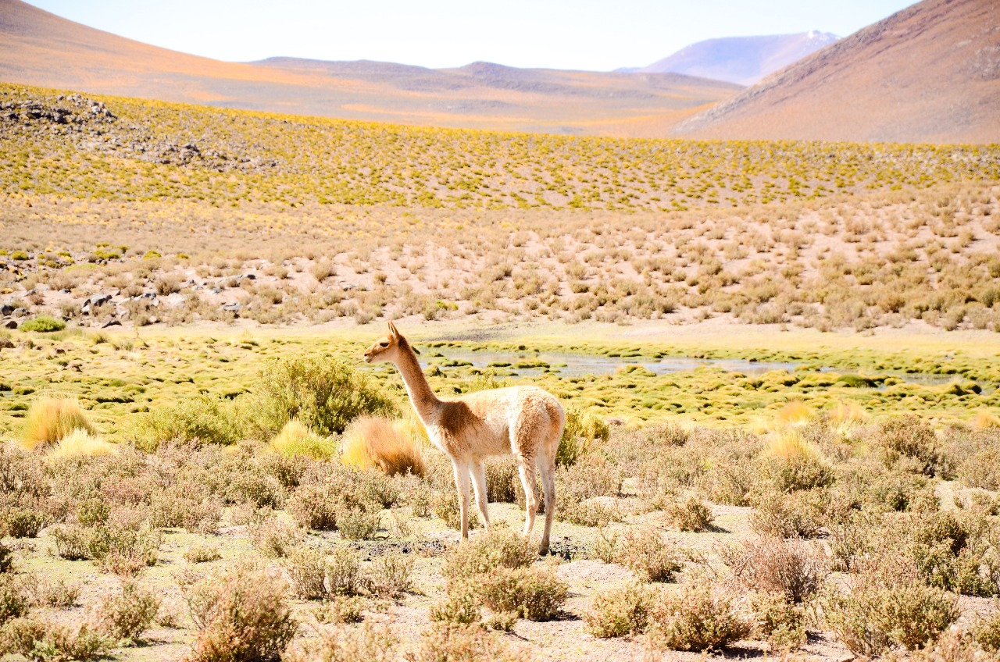
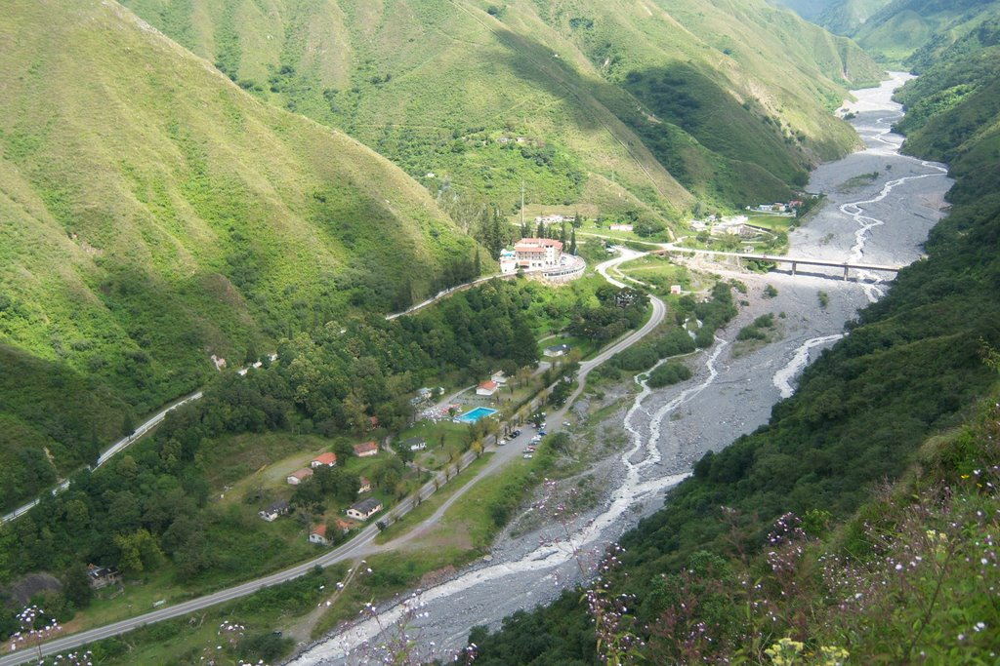
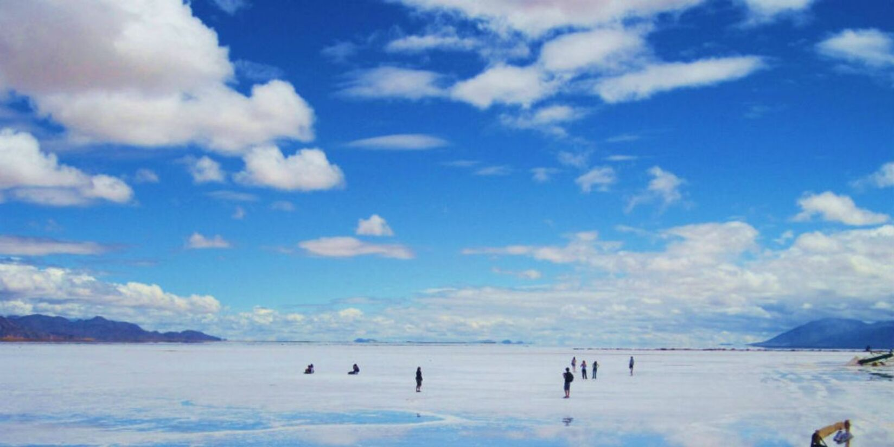
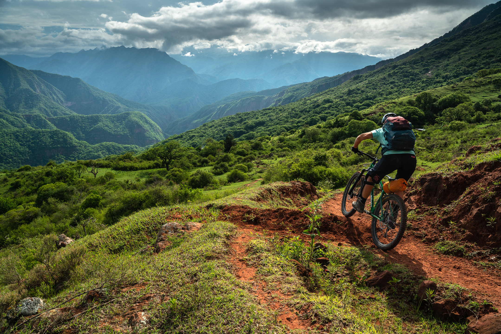

Puna Jujeña
Explora los misterios de la Puna jujeña, donde el cielo y la tierra se funden en un abrazo de colores y alturas inolvidables.

Termas de Reyes
Sumérgete en un oasis de relajación y bienestar en las Termas de Reyes, donde el calor de las aguas naturales te rejuvenecerá cuerpo y alma en medio de la belleza serena de Jujuy.

Salinas Grandes
Adéntrate en un mundo de blancura etérea en las Salinas Grandes de Jujuy, donde la vastedad del paisaje y la pureza de sus cristales de sal te transportarán a un rincón mágico de la naturaleza.

Yungas
Explora el corazón verde de Jujuy en las Yungas, donde la exuberante selva de montaña te envuelve en un abrazo de biodiversidad, ríos cantarines y una conexión profunda con la naturaleza.